M 2 (Islands War)
Lecture - 10
Greedy Algorithms - Module 2 (Islands War)
(Refer Slide Time: 00:11)

Welcome back to the second module of the third week. We continue our exploration of ‘Greedy Algorithms.’ As I mentioned, this time, we will be talking about a problem called the ‘Islands War.’ It was the fourth problem of an ABC contest on ‘AtCoder.’ It was contest number 103. You can find a link to the problem statement in the description of this video, and this one turns out to be a problem with a really fun story about warring islands, as you can guess from the name of the problem.
So, there will be a lot of conflict and drama, and your task will be to figure out how you can resolve all of these conflicts with minimum damage. So, we are going to have a lot of fun. Let us get started.
(Refer Slide Time: 00:56)


 Eventually 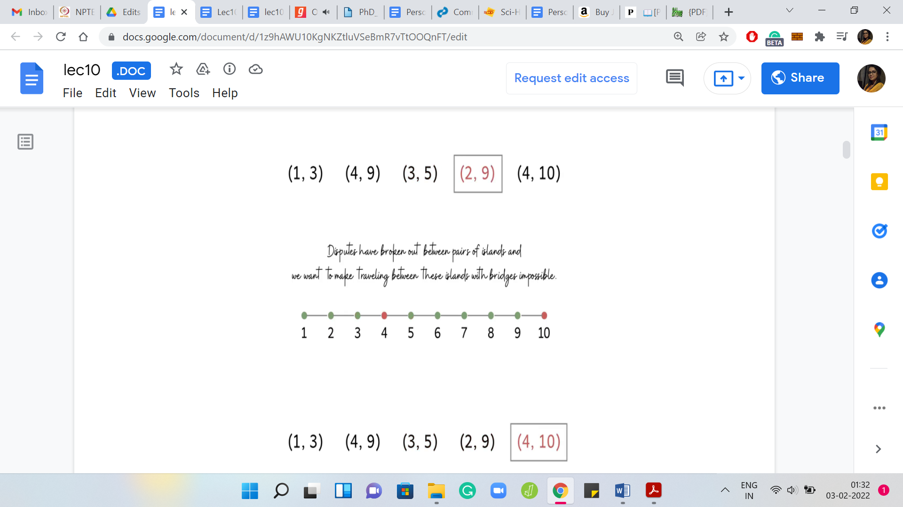
Eventually 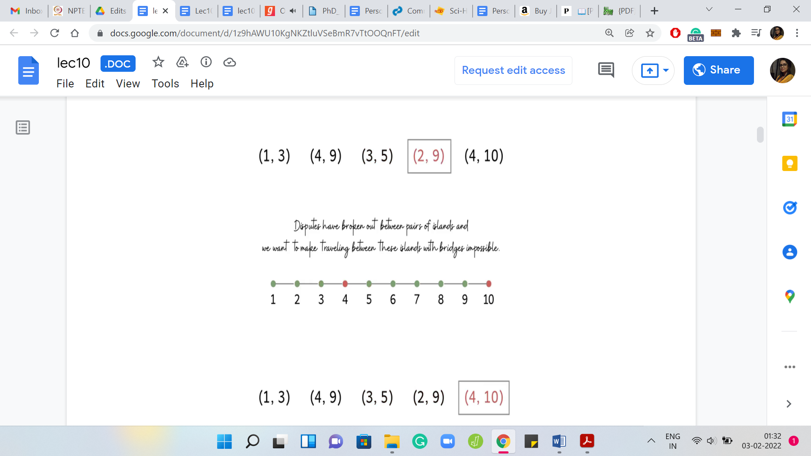
We have ‘n’ islands lining up from west to east connected by ‘n-1’ bridges. These bridges are not completely arbitrary. The ith bridge is given to connect the ith island from the west with the (i+1)th island from the west. So, it is a really clean visual. Here is an example with ten islands and the bridges. There are nine bridges, which just connect them from left to right.
West to east has been, sort of, modeled as left to right on your screen. So, the westmost island is the first island here and so on. The real story begins when we are told that some disputes have broken out between some islands, and we want to make traveling between those islands using these bridges impossible. How do we do this? We must have something to work with to be able to meet this goal. The thing that we are allowed to do is we can remove some of these bridges.
But as you can imagine, removing bridges is a fairly destructive thing to do. What we are also asked to do is to minimize the number of bridges that need to be removed. So, you want to pacify everybody involved in a dispute. In the language of the problem statement, these disputes are called ‘requests.’
So we are given ‘m’ requests. Each request is a pair ‘ai bi,’ indicating which pair of islands are involved in the corresponding dispute. What you want to do is you want to remove bridges in such a way that every request is satisfied. That is the entire problem statement.
That is the goal. What we are going to do is just try and think about this first with the help of a few scenarios. Before we get to actually thinking about specific examples, let us go through this one right here. As you probably have noticed already, we have five requests here and a useful way to visualize these requests. Because we want to be thinking about which bridges to remove to satisfy all of these requests.
(Refer Slide Time: 3:31)


We are going to visualize these requests as lines that have their endpoints at the two islands that are involved in the request. Let us just draw these out here. Maybe you can just try to figure out what is the optimal solution for this example. Just to get a feel for the question to make sure that we are on the same page with respect to the task at hand.
Feel free to pause here because I am just going to give it away after I finish this sentence. For this example, you may have noticed that it is impossible to meet all requests by destroying just one bridge because, for instance, we have a pair of disjoint requests. So, we have two requests that do not have any bridge that is common to them. There is no single bridge that will handle both of these requests. You need at least two, and the interesting thing is that you can do it with just two bridges.
You could, for example, remove these two bridges here, and you would be done. How do we go about thinking about this problem in a greedy fashion? What is a natural greedy strategy? Remember that we have to meet all requests and minimize the number of bridges we use to satisfy these requests.
What sort of bridges should we prioritize? What sorts of bridges are likely to appear in an optimal solution? A natural thing to do is to probably just go over every bridge and count how many requests are such that they would be satisfied if we were to remove that bridge. You could call this the ‘power of a bridge’ or something like that. You could use whatever term seems natural to you. I am just going to go with power.
Let us say that the power of a bridge is just the number of requests, which would be handled if we were to destroy that bridge hypothetically. Now, it seems to make sense to target the bridges that have the highest power because the more powerful a bridge, in some sense, the more requests you handle in one shot.
(Refer Slide Time: 05:51)

This motivates our first greedy approach to this problem. What we could do is compute the power of every bridge. Sort the bridges by their powers, and then pick the most powerful bridges first. In particular, to begin with, we include the most powerful bridge in our solution, breaking ties arbitrarily. Then we delete all of those requests that got handled due to deleting this bridge. Then we keep repeating this as long as we have at least one request left.
Remember that you may have to re-compute the powers of the bridges because after you delete some requests, some bridges may become less powerful than they were before. You could do all of this and what you would have as a result is a perfectly valid approach. But this is a good time to pause and think about whether it actually works. It will certainly produce a subset of bridges whose removal will handle all the requests just by definition.
The real question is whether this is the best that we can do? In other words, are we really getting to the minimum number of bridges that we need to destroy to handle all requests? This is a great time to pause the video and actually think about this. Play with some examples and see if you can come up with either an argument for the correctness or if you can come up with a counter-example showing that this may not actually be the best possible strategy.
Please go ahead and take that pause and come back to this video once you are ready. Hopefully, you have had a chance to think about this. It turns out that while extremely tempting, this strategy does not, in fact, work.
(Refer Slide Time: 07:32)


We are going to show you an example where the strategy of choosing the most powerful bridges can actually lead you to a solution that is not the optimal solution. Here we have a collection of four disjoint requests, which tells you straight away that the optimal answer has to be at least 4. Then we have a bunch of other requests, which are going to play out over the next couple of seconds.
Let us try and think about what the greedy strategy will do here. You can check that, to begin with, three bridges have a power of 4, and ‘4, 5’ is one among these most powerful bridges. The greedy algorithm could start by picking ‘4, 5’ followed by ‘8, 9,’ which is one of the most powerful bridges left in the second iteration.
After deleting ‘4, 5,’ and ‘8, 9,’ you are still left with three disjoint requests, which means that the greedy algorithm will have to output a solution involving five bridges. However, notice that four bridges are actually enough for this instance. Remember, earlier, we said that we need at least four, but it turns out that four bridges are even enough.
Now you might be thinking that was pretty close. It was off by just one. Do I really need to worry about this? So, once again, let me remind you that in contest programming, you have to get it exactly right. There is no partial credit for coming close to the right answer. Sometimes there are problem statements, which will allow for solutions close to the optimal.
But these are rare and certainly out of the scope of this course. So, always work with the mindset of shooting for the exact optimum solution. Besides, although this particular example was off by one, you can probably think about coming up with ways of modifying this example so that you can really amplify the gap between the output of a greedy algorithm that follows the strategy of destroying the most powerful bridges first and the true optimal solution.
I leave that to you as food for thought while we should probably move on, get back to the drawing board, and think about other alternate strategies. To get a feel for what is going on, let us actually begin by looking at two really simple scenarios. These are probably the simplest scenarios that we can come up with, but they will still give us some intuition for what is going on.
(Refer Slide Time: 10:04)


First, let us think about what if all the requests were disjoint? In this case, you know that there is no bridge that can handle more than one request. You know that the optimal solution must involve at least as many bridges as there are requests. So, ‘opt’ is actually equal to ‘m,’ in this case. In terms of actually coming up with a solution, if you had to, you could simply pick one bridge per request, and it could really be any bridge that kills that request. It would not matter.
(Refer Slide Time: 10:41)
 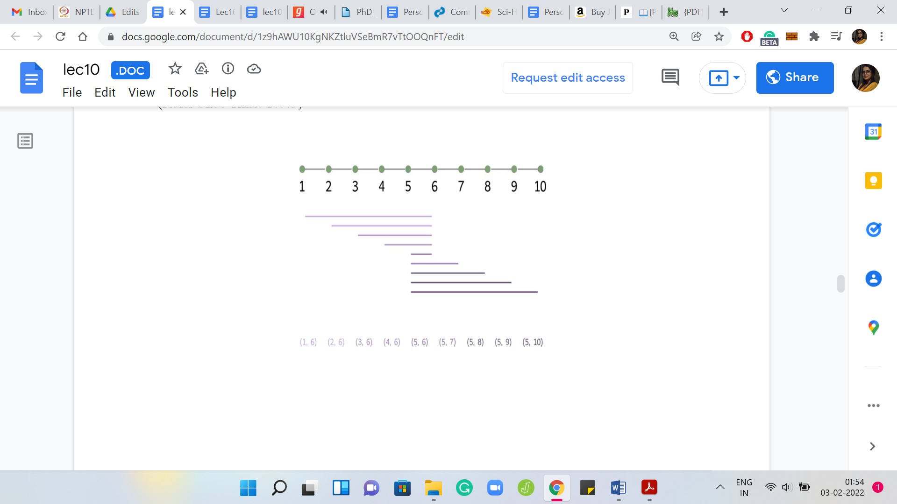 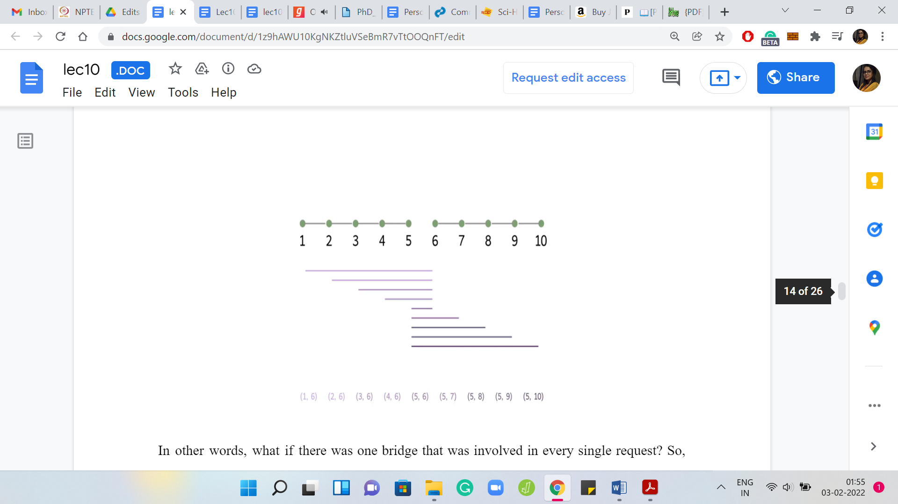
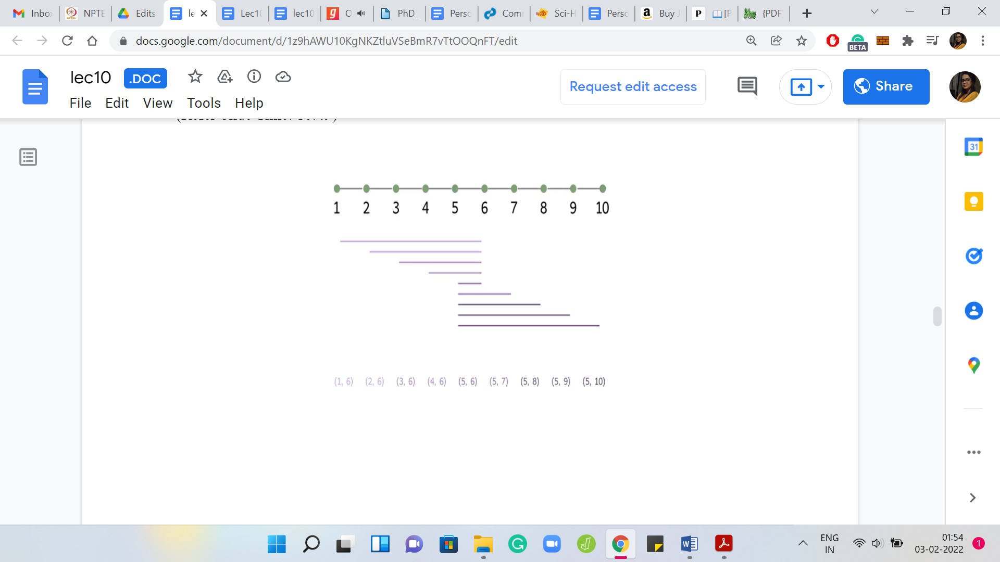 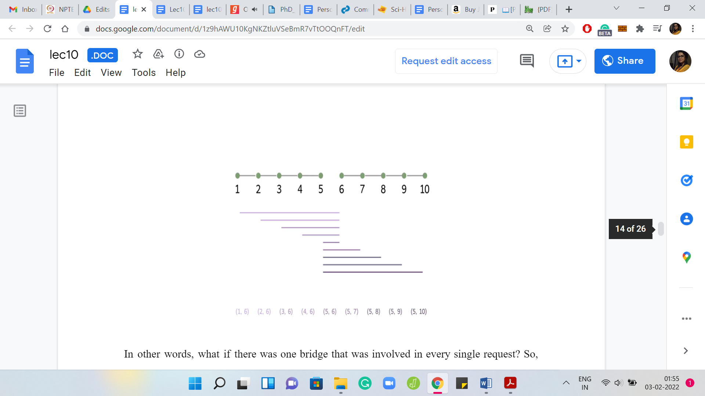
On the other end of the spectrum: What if every request went over some common bridge? In other words, what if there was one bridge that was involved in every single request? Here is one example where this plays out, and you can probably, as we go along, identify the bridge that is common to each request. It is the one that is right in the middle. When you have a situation like this, ‘what should the optimum solution be?’, you can probably guess that the optimum solution is just that one bridge that every request is involved in. A typical instance is going to be some combination of these two very extreme scenarios. So, let us think about a more generic situation.
(Refer Slide Time: 11:31)

Often it helps to think about what an optimal solution looks like, especially at the extremes. If there is some notion of beginning or end in a problem, it is worth thinking about what is going on the edge. Let us do that here and think about a situation that has no special structure.
Imagine that somebody has given you an optimal solution to look at and one question that I would like you to think about now is: Where is the leftmost bridge on this optimal solution? Where does it lie? Which request is driving the choice of the leftmost bridge? Please take a pause here and think about this because this is going to lead us to the main insight for the final solution. I hope you had a chance to think about that. We are going to work through this with an example.
(Refer Slide Time: 12:24)

Let us drop some requests right here and, as we said earlier, you really want to be thinking about: Which is that critical request that drives the choice of the leftmost bridge? There are some natural candidates. Is that the one that finishes first? Is it the one that starts first? Is it the one that finishes last? The one that starts the last? If you think about it, you will realize that it is probably the request that finishes first.
Because if you choose a bridge that came after this request finished, then you are in deep trouble. We know that we have to, at least, pick the bridge ‘3, 4,’ or one of the ones before it, to make sure that the first request is satisfied. In this example, we know that we have to pick at least one of these three bridges ‘1, 2,’ ‘2, 3,’ and ‘3, 4,’ to satisfy the first request.
The thing to think about here is: Between these three bridges, is there a natural greedy choice to be made? Is there a bridge that seems to be at least as powerful as the other ones, so that we can sort of pick it at this stage without having to worry about exploring all the choices that we have?
A natural thing to target is the last bridge, which is the bridge ‘3, 4’ in this case. Because notice that every request that can be handled by ‘1, 2,’ or ‘2, 3’ can also be handled by ‘3, 4.’ If this was not the case, then we have a request that is being handled by the previous bridges but is not being handled by ‘3, 4,’ and that would contradict our choice of the bridge that finishes first.
In case that was not completely clear, please take a moment to work through it. It is a simple argument, but it lies at the crux of why the strategy that we are going to propose is, in fact, correct. The idea here is to simply prioritize the bridge that is on the brink of the request that finishes first. Because, again, the overall intuition is that we know that we do have to pick either this bridge or one of the ones that come before it, and it seems like this bridge is at least as powerful as the ones that come before it. So, we might as well just pick this one. Let us convert this idea into an algorithm.
(Refer Slide Time: 14:51)

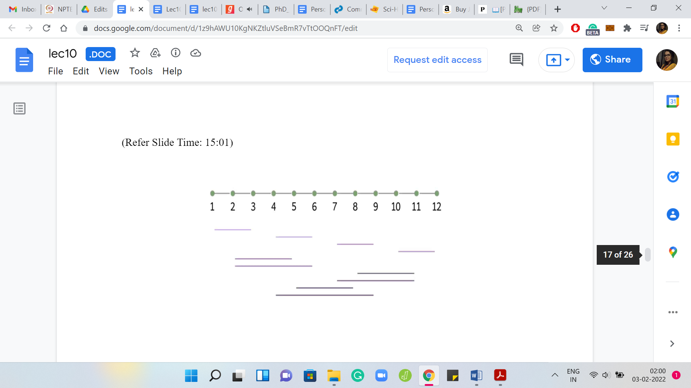 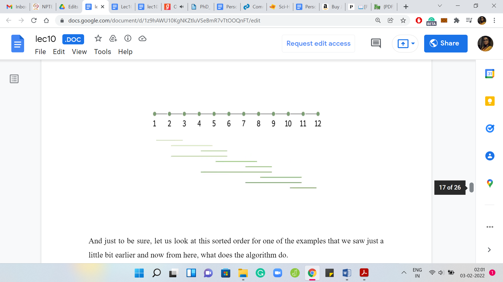
The natural thing to do here is to sort the requests by their right endpoints, which is to say that the requests that finish the earliest will come first in the sorted order. Just to be sure, let us look at this sorted order for one of the examples that we saw just a little bit earlier. Now from here, what does the algorithm do? It is going to look at the first request, pick the last bridge on it, and then eliminate all the requests that are handled by this bridge.
(Refer Slide Time: 15:11)


Then we simply continue. For as long as we have a request left, we are going to be picking the last bridge on the first request. Notice that the sorted order of the requests remains unchanged, even as bridges get deleted. We just have to make sure that we track which requests are being handled by the bridges that we are including in our solution.
Let us just play this out on a couple of examples to get a feel for what is going on. At this stage of our discussion, you are actually exposed to the entire algorithm that finds the solution. Hopefully, you have some intuition for why it works. We are going to have more to say about that and the running time in just a minute. But if you cannot wait to implement this yourself, this would be a good time to take a pause and do it.
(Refer Slide Time: 16:19)


In the meantime, let us play out the algorithm once again on one of the examples that actually appeared in the problem statement. Speaking of the problem statement, let me also remind you about the constraints that we are given on the inputs. Notice that the number of islands and the number of requests can be as large as 105, which means that an algorithm that is either quadratic in ‘N’ or ‘M’ would not be feasible.
In fact, even a solution that has a worst-case complexity of ‘N*M’ might get you into trouble. Let us analyze the running time of the approach that we have just proposed. Recall that in the first step, we sort the requests according to their right endpoints. That is just a standard sorting procedure and it will take you time ‘M log M,’ which is still pretty safe within the given limits.
The second phase is where we actually build up the solution. The way we did this was by performing one pass over the sorted list of requests. Every time we encountered a request, we would include the last bridge on that request in our solution. We would also eliminate all the other requests that were handled by this bridge.
But if you implemented exactly according to this description, then you have to be a little bit careful because you might end up getting an order ‘M2’ kind of a running time. Because every time you include a bridge, you do one more pass over the list of requests to identify those that need to be eliminated.
I will leave it to you to think a little bit about how you can implement this in a slightly different way to ensure that all your work is being done in just this one pass over the requests. One hint is that instead of actually explicitly eliminating requests as you go along, can you simply track the last bridge that you have included in your solution and for every request that you are going over, simply check as you go along, if it was handled by that last bridge or not and think about why this approach would also work?
That is all that I will have to say about the implementation for now. I would like to go back a little bit to our discussion about the correctness of this algorithm. One of the really neat things about this algorithm is that the solution that it produces carries proof of correctness. If you think about the bridges that we chose finally, each of them corresponds very naturally to a request.
That is that request, which triggered the choice of this bridge and the solution. If you think about it, you will realize that all of these requests are, in fact, disjoint. Because if they were not disjoint, then at least one of the overlapping requests would have been eliminated in a previous iteration. You get a really simple contradiction. Now you have a collection of disjoint requests that is exactly the same size as the solution, which means that our solution has to be optimal.
(Refer Slide Time: 19:31)
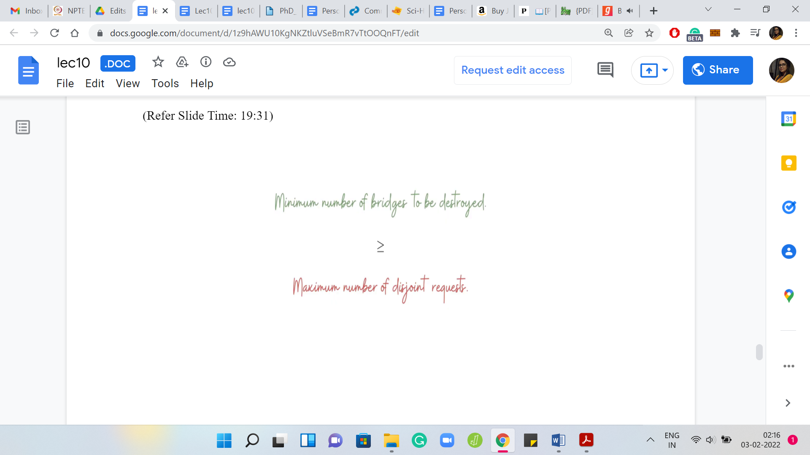  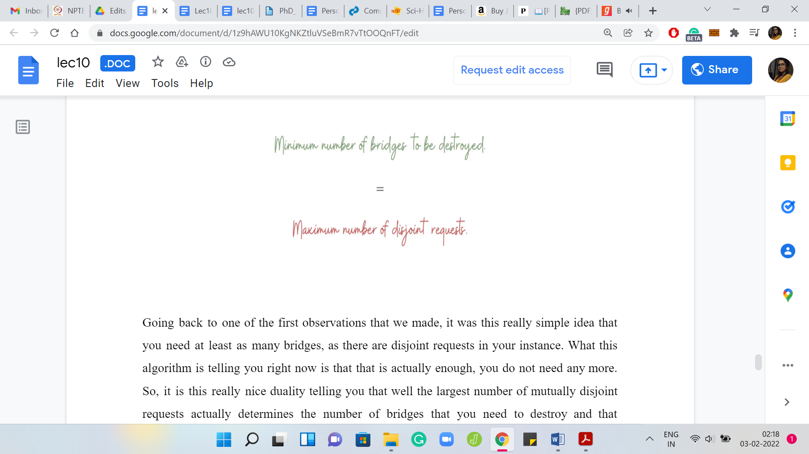
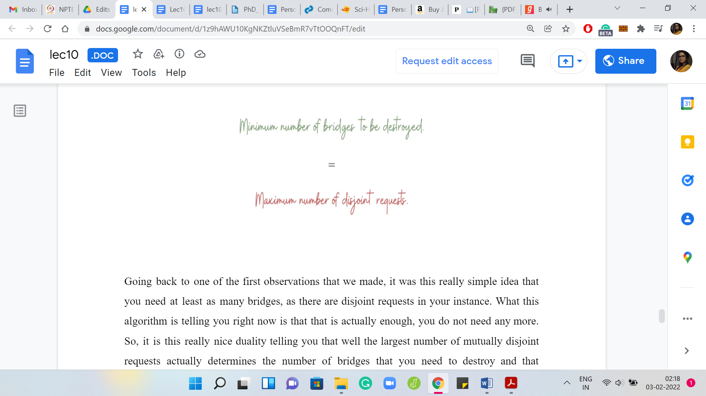
Going back to one of the first observations that we made, it was this really simple idea that you need at least as many bridges as there are disjoint requests in your instance. What this algorithm is telling you right now is that it is actually enough. You do not need anymore. It is this really nice duality telling you that the largest number of mutually disjoint requests actually determines the number of bridges that you need to destroy. That concludes our discussion about the algorithm and its correctness.
(Refer Slide Time: 20:07)


Let us move on to the implementation. This is your regular spoiler alert at this stage of the discussion. If you want to try this yourself, you should probably come back after you have given it a shot. In the meantime, let us get started here. Let us recall that the first line of the input is just the number of islands and the number of requests given as two space-separated integers.
Let us just read those in and the next ‘M’ lines give you the ‘M’ requests. Let us declare a list of requests and let us read these in. I am going to store each request as a tuple, you could also store it as a list - does not really make a difference. This is the current request, which we are going to append to the list of requests.
The first thing that we have to do is to sort this list of requests according to the right endpoint. What we are going to do is use the built-in sort function on the list of requests. But we also have to tell the ‘sort’ function to sort according to the second coordinate. There are many ways that we can do this.
For brevity, I will just use a lambda function here. If you are not familiar with this sort of notation, you can look it up. But intuitively, you can imagine that it is instructing the sort function to sort according to the second coordinate of the tuples. Now that the requests are sorted the way we want them, let us actually get to the bit where we build up the solution.
Let us declare an answer variable, which we initialize to 0. We will start looking at these requests and figure out if a request really demands that a bridge needs to be added to the solution. Let us start by going over the requests one by one. What do we need to know about this current request?
What we need to know is: Is it being handled already by the solution that we have built up so far or not? If it is not, then we need to add the last bridge on this request to our solution. If it is, then there is nothing to be done and we can move on. How do we check this? How do we check if the current request is being handled by the solution that we have built up so far?
Notice that if it is being handled by the solution, then certainly the last bridge in our solution covers this request. Because if the last bridge does not cover this request, then none of the previous bridges would either. If it covers the request, then we are done. It is enough to keep track of the last bridge in the solution that we have built up so far.
In some sense, what we are going to have is something like this: If the last bridge is at least request of 0. What does this mean? Look at where the request starts, and make sure that the last bridge is after the starting of this request. If this is the case, then the last bridge covers this request. If this is the situation, then we can just keep going.
But if it is not, then notice that we do need to add a bridge to our solution to handle this particular request. What is the bridge that we are going to add to the solution? As we have discussed when we were going over the greedy approach, we said that it is enough to pick the last bridge that covers this request.
That is given by request of 1. What we want to do is, we want to add this bridge to our solution. When I am talking about the request of one, it is really the bridge that connects the islands’ request of 1-1 with request of 1. So, that is the bridge that I want to add to my solution.
Remember that we are really just tracking the number of bridges in our solution and as we go through this one pass over the requests, what I need to remember is: What was the last bridge? In other words, what was the rightmost bridge in my solution? At this point, what do you want to update is just the value of last bridge to reflect that the last bridge is now the bridge that ends at request of 1.
By the way, I am just thinking of representing the bridges by their right endpoints here. You could also represent a bridge by its left endpoint but then you would have to adapt the ‘if’ condition in the previous block. The other thing that we have to update is the answer variable. We need to increment that by 1, and we need to print this answer.
One thing that we have not done is initialization. What happens to the first request? When you start this ‘for’ loop, you are going to run into a problem when you try to execute this ‘if’ statement because there is no last bridge. We have not even started building our solution so far.
To make sure that the last bridge of the first request is actually chosen in the solution, what I initialize last bridge is -1 because that way even if the request started at island number 1, it is still not going to be covered by this last bridge. Notice that this is an artificial last bridge, it does not really exist.
It is just so that the code that we have written picks up the last bridge of the first request, to begin with. Then it does its thing after that. You could also initialize this as requests of 1 of 0 and then you could start your ‘for’ loop from the second request onwards. That is just going to be a matter of preference.
But I believe this should work. I think we have gotten all of the moving parts right here. So, I am going to try and run this. Notice that the output here turns out to be 2. I think this was one of the examples or at least close to one of the examples that we have discussed. We see that the expected output is also 2. In general, as a matter of practice, you just want to make sure that your output tallies exactly with what is expected.
We could run this on one of the other examples as well. As usual, you probably also want to run this on examples that you come up with just to have an extra level of sanity check. Let us try running this on the last sample output where the expected answer is 4 and this is also an example that we have actually seen.
Let us go back and run our program and we will see that the output actually matches and everything seems fine. I think we should have some confidence from the fact that we have discussed our approach by now, in quite some detail. At this point, I would encourage you to actually check this code or a version of it that you might have put together on the full set of test cases and let us know how it went.
As usual, if you are stuck anywhere or if you are running into trouble with the logistics of submitting your solution, please give us a heads up on either the Discord channel or drop a message in the Google Forums for this course and one of us will be sure to get back to you. All the best and we will see you in the next problem. Bye for now!